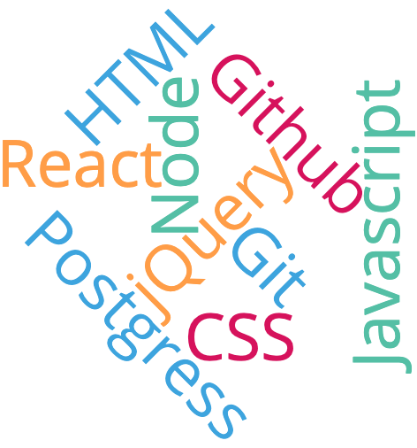

Hi, I am Oogii. I am a front end development student at Thinkful.
I grew up in a small town in the very cold country of Mongolia. I am proud to have a different background and life experiences than others. My unique culture and experiences make me who I am and gives a different perspective. I was raised in a nomadic lifestyle without technology. When I immigrated to America it gave me a great opportunity to start my new life in the tech field. I am very happy to become a woman developer and become a role model for the young generation in my country, especially girls. No matter where you come from, if you work hard you can accomplish your goals. Since I have come to America I have learned this lesson. I am also a marathon runner. This skill has taught me patience, self-discipline, and persistence.

This is a fun quiz app that allows you to educate yourself about Mongolia. It asks you a question and tracks your score. At the end you get a nice surprise telling you how you did and an interesting picture. The app is written in HTML, CSS, and jQuery.
Trail run app helps people to find trails in any city around the United States. Users can see the 5 days weather, map, and trail information. The app is written in HTML, CSS, jQuery, and uses APIs.

Not Our Backyard is built as a place for people to come together and help clean up their communities. The overview allows people to see how much garbage has been cleaned up different places around the world. Anyone can create an account and start tracking the garbage that they clean up. Let's all work together to make the world a cleaner place. The app is written in HTML, CSS, React, Jest, Chai/Mocha, Express, PostgreSQL, Knex.
Bucket list is built as a tool to help you track the things that you want to do in your lifetime. You can add bucketlist items to your own personal list. For each item you can list tasks you need to complete to finish you bucket list item. As you complete tasks and items you can check them off you list and see them get crossed out. Have fun and enjoy life! The app is written in HTML, CSS, React, Jest, Chai/Mocha, Express, PostgreSQL, Knex.
You can contact me anytime just click the link Oogii